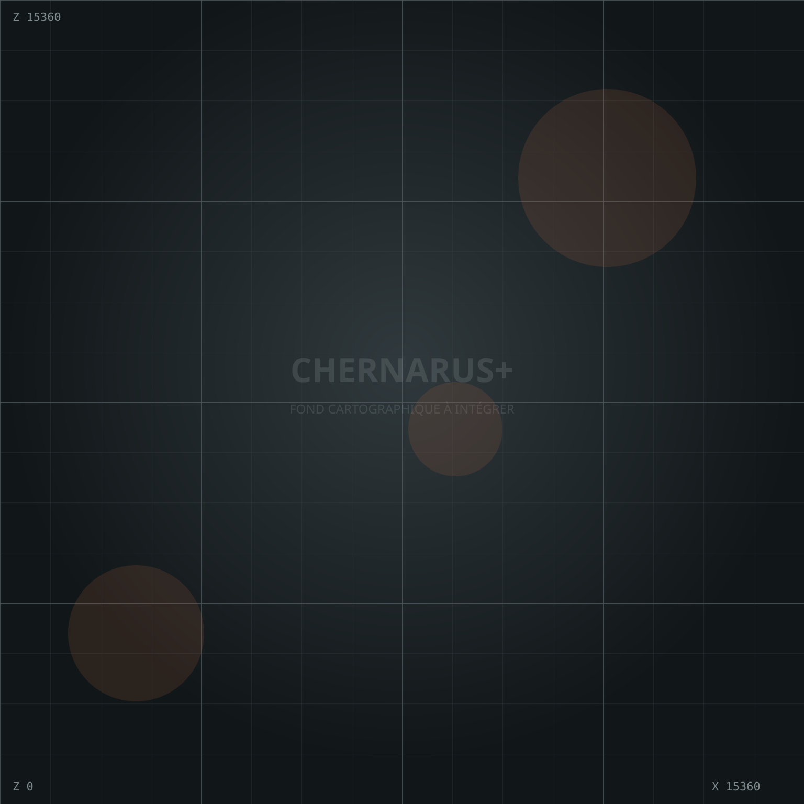

SENZANY // IMPLANTATIONS
CARTE DES
SURVIVANTS.
Consultez les zones déjà occupées et proposez l’emplacement de votre future base directement sur la carte.
Zone occupée
Demande en attente
Votre sélection

Maintenez et glissez pour déplacer la carte · molette pour zoomer